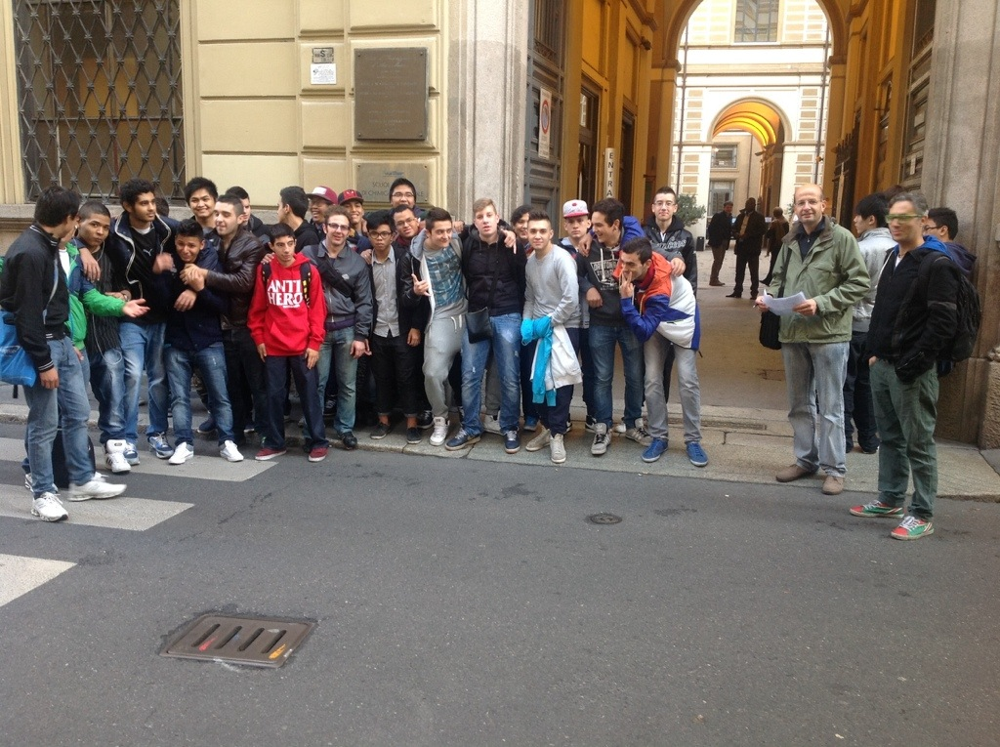

Sabato 26 ottobre c
c'èra il Linux Day, giornata dedicata al sistema operativo open source e del software libero.
Si parlarva di software, di hardware e di libertà delle informazioni. I Lug (gruppi di utenti Linux) e le associazioni hanno organizzato un evento con oltre cento appuntamenti, da Aosta ad Avola. Tutti coordinati dalla Italian Linux Society che,
oltre a promuovere l'evento.
c èrano dimostrazioni e approfondimenti riguardanti il sempre più vasto panorama dell'hardware open source, ossia dispositivi, piccoli computer, componenti progettati e costruiti seguendo i principi del software libero.
la mia classe ha partecipato a questi tipi di eventi :
- come si usa wordpress
- come funzione l'internet caffe
- la stampa 3d

PATRICK KAMBARAMI